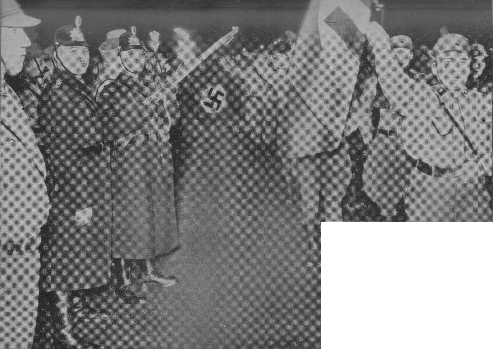
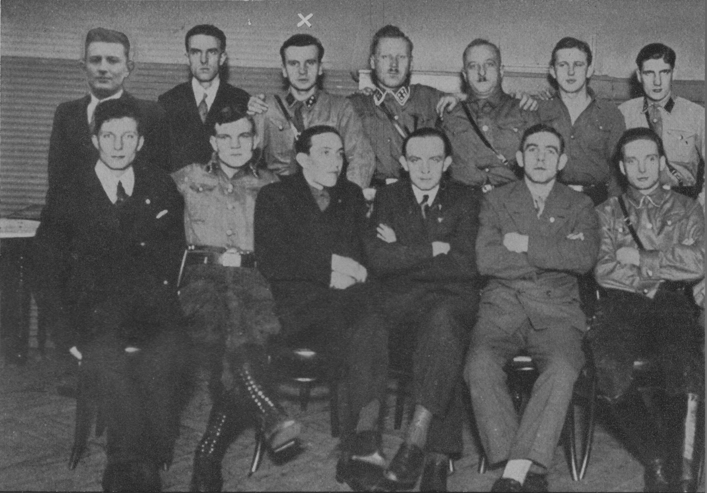

SA. marschiert durch die Wallstraße
an der Mordstelle vorbei (2. Februar 1933)
Die Amnestierten (Weihnachten 1932)
Obere Reihe von links:
Foyer, Markowski, Maikowski, Hahn,
F. Domming, Wittke, K.
Domming.
Untere Reihe: Pieper, ein Ostpreuße,
Stief,
Froschauer, Friede, Liebscher
